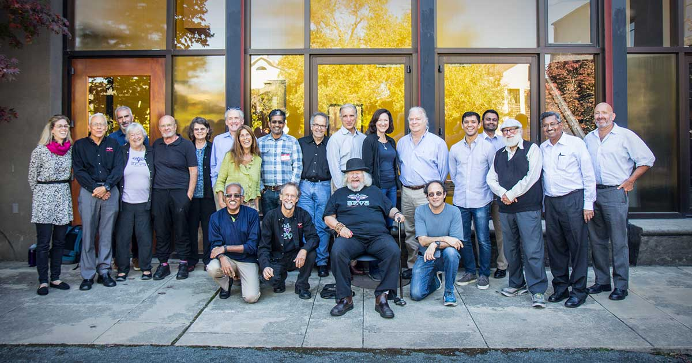

Cmd Prmpt - Py
>>>
>>>
History: I started getting into web development a few years back when my mom asked me, "What are you going to do with your major?" to which I replied, "um ... UI/UX Designer?", so now I do front-end stuff. I started my career at a non-profit called Seva and was fortunate enough to have met Adam Chew, the Web Master at the time, to teach me the basics of Web Design. He was very patient with me and we got along very well. With his guidance, I built a nice map. (Check it out below) Now, I mostly freelance for a Startup in SF and practice/study front-end while going to school. Since I attended UC Berkeley, I also have a background in CS Theory.
Web Interests: I AM A SELF-PROCLAIMED CSS PURIST. Working with vanilla CSS/HTML is definitely my jam, but I can also work in React and Ruby on Rails. I'm also open to trying other web technologies, but nothing is more statisfying than finding an elegant solution in plain CSS. I follow podcasts and conferences on the latest CSS trends. CSS Grid is cool, but most use cases can be satisfied with regular floats or flexbox. Cross Browser Compatibility is the bane of my existance and I actually like building responsive layouts. I have never worked for a federal organization, but I would love to learn how to make my websites more accessible (508 Compliance).
Personal Interests: In my free time, I like to cook and play games with my boyfriend. I'm into rpg mmo's, gacha games, and board games. I like to cook Asian food and I'm actually not that into boba, but I do enjoy a good ice tea. I probably need to exercise more.
Employer: Seva Foundation
When & Where: Summer 2017, Berkeley / Remote
Position: Intern
Background: I reached out to Seva because I found an application online and the requirement only included the bare minimum of CSS & HTML. I thought it was going to be perfect for me since I was just starting out. The website relied on a Content Management System, so there was not much for me to do in terms of layout/design. Adam handed me a list of possible projects and I ended up tackling the Map Project. There was an old map of Seva's Partners, Mentees, and Offices. The org at the time reached +100 locations, so the map was getting cluttered. Adam asked me to build a new map that would cluster nearby nodes. He also wanted me to build a legend, a filter, and custom info windows.
Project
1) Research: First, I had to research which Map API was most well-suited for our project. I looked at Leaflet, Google Maps, Open Layers, etc. After a few weeks of reading forums and documentations, I ended using the Google Maps API. Since our old map was hosted on Google's MyMaps(now deprecated), I thought our users would benefit from the consistency. While there was no harm in trying various API's, I didn't want to waste a few months working on a project and realize later that some functionality wouldn't be possible.
2) Data Creation: To get nodes on the map, locations needed to be translated into javascript objects. I used geolocation to obtain each location's latitude and longitude coordinates. In the end, each object had 7 properties. For long term maintenance, I decided it was beneficial to separate the code into script files and data files. It was tedious, but I wrote +800 lines of JSON where each object encoded keyword(for filtering), image, latitude, longitude, name, type(for different icons), and description.
3) Icons & Buttons: I found nice map icons on Font-Awesome and the Web Master helped me edit them to suit our needs. In total, there was three icons: mentee, partner, and office. I also played around with various back buttons and ended up sticking with a 'double arrow' back button.
4) Info Windows: With a custom info window, I was also able to match the background color of the title with its corresponding icon. This color association helps remind user the type of location they are currently viewing. A major part of the customizing the info window was re-designing how it appears and disappears. The default behaviour is having the info window hover above its icon with no animations. Instead, I designed it so that the info window slides from the left and slides out of view when the user clicks on the map or on the back button inside of the info window itself.
5) Themes: I was able to set up three different color schemes for the map, and set the default theme to "Silver" to contrast the bright colors of the locations icons. Google made this process ridicuously easy. There was even a developer tool for picking the color of each road/mountain/etc instead of having to hard code it ourselves.
6) Legend: I spent a large amount of time designing how the legend opens and closes. On top of that, I realized I had to design a separate legend for portait and landscape view. I ended up using two legends and displaying one and hiding the other according to the screen size. Finally, I also added a tool-tip and filter function. The tool-tip uses the same animation as the legend for consistency.
7) Filters: At this point, creating a filter was easy. Most of the logic, such as positioning the filter box and conditioning the JSON file, was already done in the legend.
8) Others: Each info window has a CSS blur on the bottom of the text to indicate there is more text. The effect is subtle but adds a nice touch. I also had to manually add +100 hyperlinks on every info window to other programs on the site. The code itself is clean with thoughtful comments, and there is a read me explaining how others can use my repo for their own map!
Final Product
Employer: Cardinal Hire
When & Where: Current Job, Remote / Oakland / San Francisco
Position: Freelance, Part-Time
Background: Paul, the current CEO, actually approached me at UC Berkeley's Summer Career Fair in 2018. In the middle of my summer break, I repsonded to a phone interview and code test which led to my first offer as a Developer! We have an amazing UI/UX designer, so most of my work includes translating his designs into markup. Since the designs are static, it's my job to come up with a responsive design and intuitive user interactions. The best part about working remotely is being able to choose when I work and how much I work. :)
Projects
1) Getting Started: My first task was to get my system updated so I could develop locally. In the first few weeks, I learned Ruby on Rails and the app's architecture. We submit tickets on Clubhouse and use Github to track our own branches before merging it into our live branch. My first commit involved debugging a config file for Windows.
2) Sign Up: I wanted to focus on front-end, so my first task was setting up the layout for a new sign up process. I mostly used Twitter Bootstrap, and plain CSS/HTML for the markup. Some of the inputs needed to be a different color on selection and then unselect all other inputs. I solved this with jQuery. An important discovery I made was SVG could by styled with plain CSS.
3) Candidate Profile: We had a lot of ambitions regarding the profile page. Since there were so many boxes, I thought it would be a good opportunity to test the effectiveness of CSS grid. The design was a bit tricky since we needed to display/enable certain buttons for certain users.
4) Landing Pages: These pages are static and most of the work involves having a keen-eye for small details.
5) Search: This was one of our most back-end intensive project. I worked on the filter display and the result box for each candidate.
Employer: Personal Project
Background: I decided I needed more practice with a Javascript framework if I wanted to be taken seriously as a Front-End Developer. The React Tutorial shows you how to build a Tic-Tac-Toe game out of components. Inspired by the grid-based game, I challenged myself to code the 2048 game with variable board size, scoring function, and new game modes.
Project
1) Research: First, I played the in-browser 2048 game. Each move spawned 2 squares on random empty spaces on the board. Numbers are only added if they are neighbors.
2) Board Size: The range input value for board size is observed by an onchange event from the game state. Once the game state changes, its children are passed down the size by prop values, and thus renders the appropriate board size.
3) Scoring Function: The score is calculated by the total amount of the current state minus the previous state.(or the total value that spawned within a single move)
4) 2048 Logic: I stored the numbers as a single array and created helper functions to convert the 1D array to rows or columns. From previous projects, I could have coded a single "move up function" and rotated the board some 'x' amount of times eaccording to the whether the move was up, down, left, or right but rotating an array in Javascript seemed messy. Instead, I wrote the logic for moving up and simply used the column and row logic in both normal and reverse order to mimic moving in all four directions. For randomness, I used Math.random and returned 2 if the value was less than .5 and returned 4 otherwise.
5) Arrow Keys: I was able to capture arrow key events using an input box and setting autofocus to "true". I was afraid users would not realize focus on the arrow key box is required to play. In the future, I would capture events globally and collect sliding events for mobile users.
6) Extreme Mode: This mode spawns 1 and 3, meaning the player will also have to deal with a wider range of numbers. There is a score multiplier to incentivize players to play in extreme mode.
7) Others: I didn't want to hard code the colors since there is an infinite amount of numbers. Instead, I used a function for incrementing hexcode(colors can be represented in hexcode) and using modulus of white(the largest hexcode color) to determine the color of each square. The game panel and the board is as respsonive as it can be, but large game board size will not fit on certain screens. Please don't play this game on mobile. There is no sliding event and the board does not scale well on mobile. Sorry!
Final Product
I'm on a journey on becoming the best web developer I can be. If you would like to help me in my endeavor, please feel free to contact me by email address or phone number.
Email: alvinnguyen@berkeley.edu
alvinnguyen116@gmail.com
Phone: (408) 992-5172